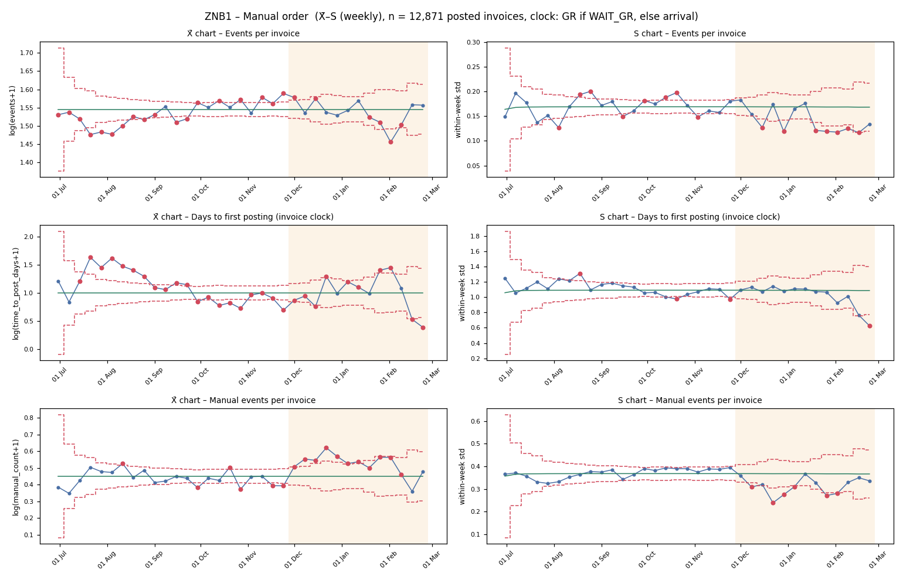
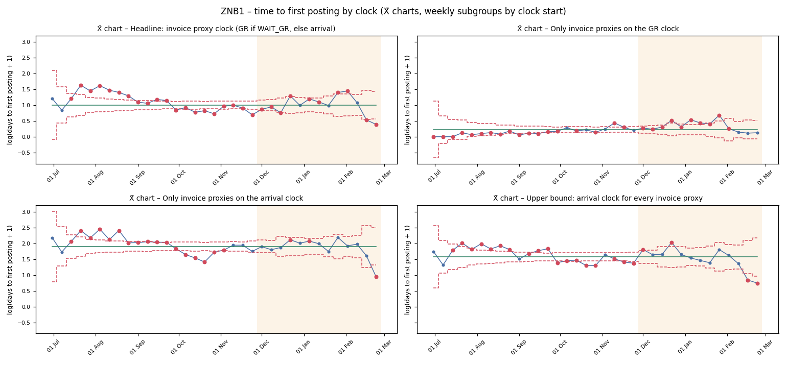
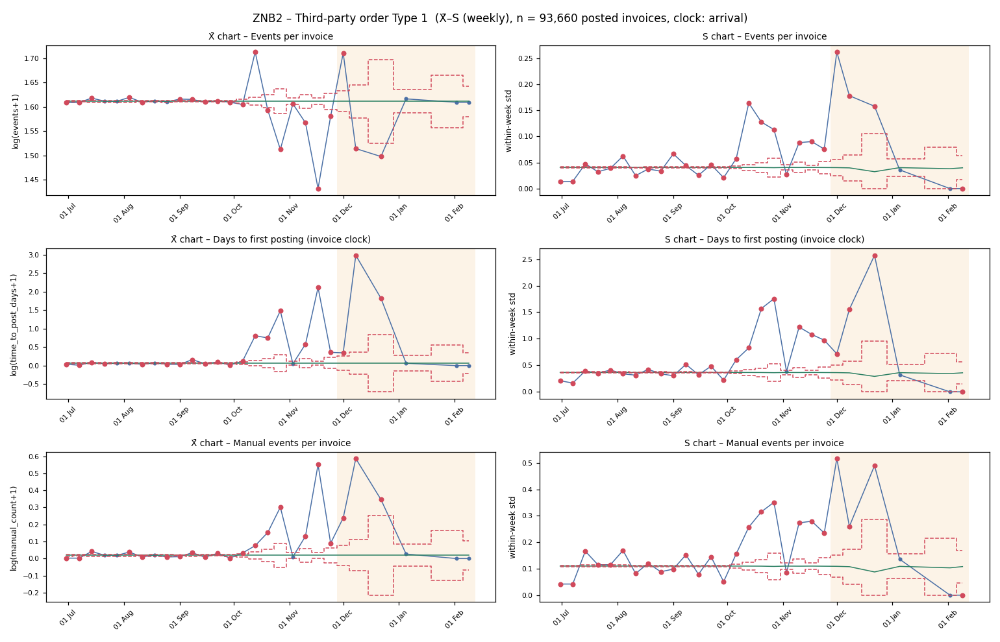
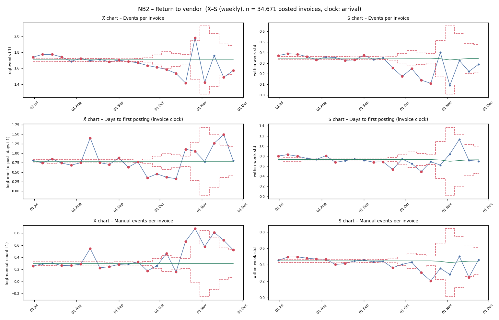
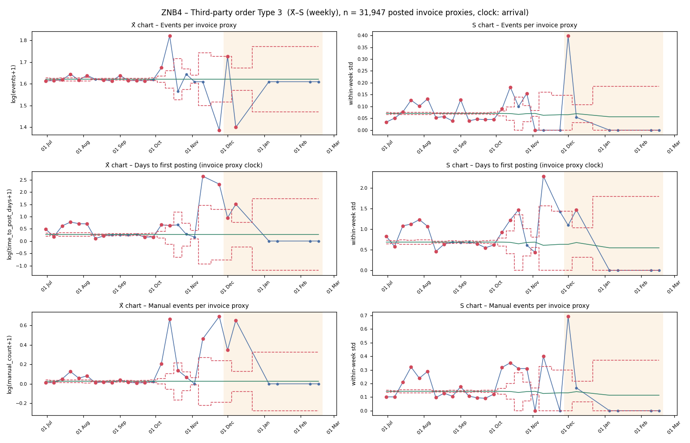
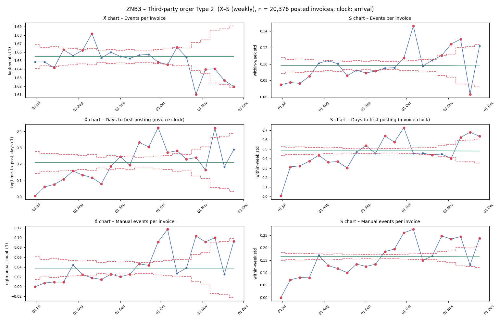
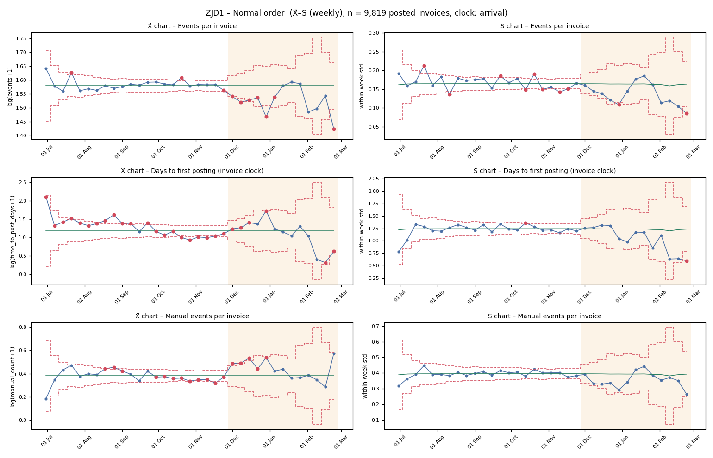
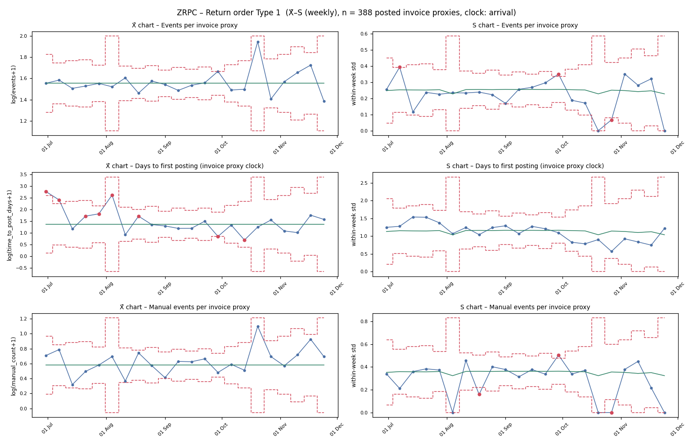
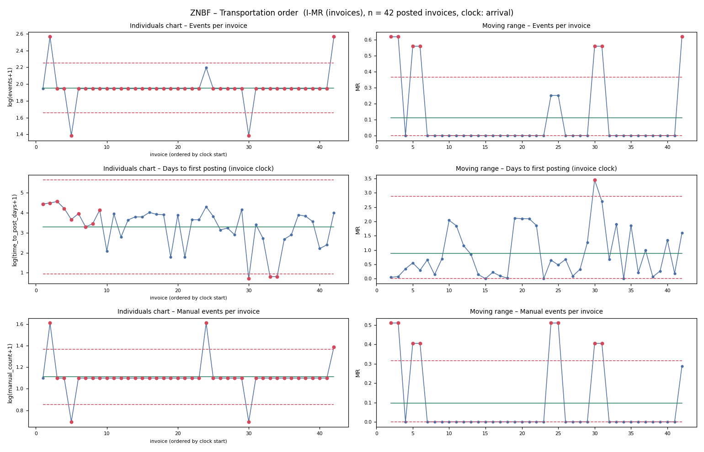
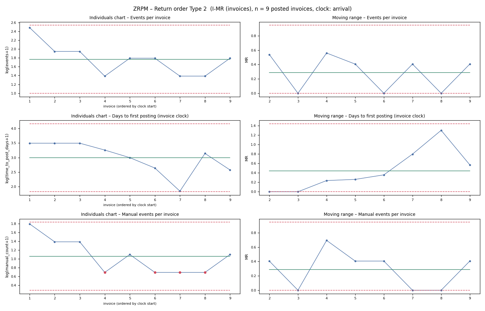

Control Charts Explained
What the control charts in this project are for, what exactly they measure under the invoice clock, how to read every panel and rule, and what they can and cannot tell us.
- 1 · What they are for
- 2 · What is charted
- 3 · Reading a figure
- 4 · The rules
- 5 · Worked example
- 6 · ZNB1 by clock
- 7 · Results
- 8 · Caveats
- 9 · What changed
1What control charts are for
Every process varies. Some invoices post in minutes, others take weeks. A control chart separates two kinds of variation:
- Common cause
- The everyday noise of a stable process: different suppliers, different clerks, a busy Monday. It is part of how the process is built and only changes if the process is redesigned.
- Special cause
- Something that changed: a backlog, a new rule in SAP, a holiday, a shift in which invoices arrive. It shows up as points outside the limits or as patterns that randomness rarely produces.
A process whose chart shows only common-cause variation is in statistical control: it is predictable, and its past behaviour is a fair forecast of the next weeks. In this project the charts have three jobs:
- Screening. Which PO types behave predictably, and which drift? This is part of the high-level screening in Step 3 of the report.
- A precondition for capability. Cpu (can the process meet the 10- and 30-day SLAs?) assumes a stable process. If a process is out of control, Cpu describes an average over changing conditions, not a stable property.
- Pointing at when things changed. Flagged weeks tell us where to look for causes (a backlog, a change in routing, the composition of the invoice population).
In control does not mean good. A process can be perfectly stable and still miss the SLA on half of its invoices. Control is about predictability; capability (Cpu, breach rates) is about meeting the deadline. The report shows both for this reason.
2What is charted: invoices on the invoice clock
The charts use the same unit and the same clock as the SLA and missed-discount analysis, so the control verdicts and the money figures describe the same thing.
- Unit
- One posted invoice: a PO_ID ×
SAP_PO_Nocycle. A PO can hold several invoices; each gets its own clock. Invoices that were never posted (8,042 of 215,128) have no end point and are left out. - Clock start
- The invoice's first event (arrival in accounts payable). For ZNB1 only, the clock starts at goods receipt: the first Wait for goods receipt event with object code
WAIT_GR, read as the moment the goods receipt was booked.END_WAIT_GR(wait ended without a goods receipt) does not count, and ZNB1 invoices without aWAIT_GRstep keep the arrival clock. The log has no goods-receipt date, so this is a proxy. - Clock stop
- The first posting (MM Posted Automatically, Posted manually or MM Autopost after manual process): the moment the invoice became payable. The log ends at posting, not payment.
- KPIs
- Events per invoice (all steps of that invoice cycle), days to first posting (clock start → first posting) and manual events per invoice (events not done by the two system users). Only the time KPI depends on the clock; the two counts describe the same invoices so that all three rows of a figure share one population.
- Scale
- Every KPI is transformed with log(x + 1). Times range from seconds to months; the log pulls in the long tail so a few extreme invoices don't dominate the mean and the standard deviation. The +1 keeps zero values defined. To read a value back in days: days = evalue − 1. The centre line then is a geometric mean, which sits below the ordinary mean for skewed data.
- Subgroups
- Invoices are grouped by the week in which their clock started (Monday to Sunday). For ZNB1 that is the goods-receipt week where there is one: an invoice belongs to the week its payment term began.
- Period
- The event log runs from 01 Jul 2025 to 03 Mar 2026, and the charts use all of it: clock starts from 01 Jul 2025 to 28 Feb 2026. Only the incomplete last week (the log ends on a Tuesday) is left out, 5 invoices. One thing changes along the way: the extract holds only POs whose first accounts-payable event falls between 01 Jul and 30 Nov 2025, and follows them until the log ends. No new POs enter the log after that (the company of course kept creating POs; they are just not in this file). From 01 Dec 2025 on, every clock belongs to a follow-up invoice of an older PO, or (for ZNB1) to a goods receipt booked after November for an older invoice. These 3,315 invoices are kept, so the charts match the SLA and missed-discount figures, but that period is shaded in the charts because the population is different.
This PO has an invoice that waited for goods receipt and one that didn't. The first gets the goods-receipt clock, the second the arrival clock. Each becomes one point in the chart data, in the week its clock started.
| Invoice | First event | WAIT_GR | Clock | Clock start | First posting | Days | log(days+1) | Events | Manual |
|---|---|---|---|---|---|---|---|---|---|
| 6136582 | 01 Sep 2025 17:36 | 04 Sep 2025 17:48 | GR | 04 Sep 2025 17:48 | 04 Sep 2025 17:48 | 0.00 | 0.000 | 4 | 0 |
| 6481696 | 17 Nov 2025 17:33 | – | arrival | 17 Nov 2025 17:33 | 02 Dec 2025 15:20 | 14.91 | 2.767 | 9 | 2 |
3Reading a figure
Each PO type has one figure (output/figures/control_charts/cc_<type>.png) with three rows, one per KPI: events, days to first posting, manual events. Each row has two panels.

Left panel: the X̄ chart (where is the process?)
- Blue dots: the mean of log(KPI + 1) over all invoices whose clock started in that week.
- Green line: the centre line, the overall mean weighted by week size (X̿).
- Dashed red steps: the control limits at ±3 standard errors. They are wide in weeks with few invoices and narrow in busy weeks, because an average over many invoices varies less. That is why the limits funnel in during July, when only a handful of invoices had started, and widen again in the shaded follow-up period.
- Shaded area: clock starts from 01 Dec 2025, when only follow-up invoices of older POs remain (no new POs enter the log).
- Red dots: weeks that break at least one rule (section 4).
Right panel: the S chart (how consistent is the process?)
Each dot is the standard deviation of the invoices within one week. A high point means that week mixed very fast and very slow invoices; a low point means the invoices were unusually alike. The centre line is c₄(n)·σ and the limits are c₄(n)·σ ± 3·σ·√(1 − c₄(n)²), where c₄ is the usual small-sample correction. Only rule R1 is applied to the S chart.
Small PO types: individuals and moving-range charts
PO types with fewer than 5 invoices per week on average (ZNBF and ZRPM) get an I-MR chart instead: every invoice is its own point, in order of clock start (the x-axis is the invoice number, not a date). σ is estimated from the average moving range between neighbouring invoices (MR̄ / 1.128). The right panel is the moving-range chart, with an upper limit of 3.267 · MR̄. With 9 invoices (ZRPM) such a chart proves very little either way.
Robustness check: weekly means as individuals
With hundreds or thousands of invoices a week, σ/√n becomes tiny and the X̄ limits very narrow, so even a small, harmless shift between weeks breaks them. The pipeline therefore also charts the weekly means as individual values (an I-chart on the weekly means, σ from their moving range). That treats normal week-to-week variation as common cause and only flags shifts that stand out from it. It is not drawn, but its verdict is in the results table ("weekly-means OK"). If a KPI fails even this check, the change is large, not just statistically detectable.
4The rules (Western Electric)
The rules are applied to the standardised values z. The band between the centre line and ±1σ is zone C, ±1–2σ zone B, ±2–3σ zone A. Under a stable, roughly normal process each rule fires by chance only rarely (well under 1% per point), so a firing rule is evidence of a special cause.
| Rule | Pattern | What it usually means here |
|---|---|---|
| R1 | One point beyond ±3σ | A single unusual week: a backlog, a holiday week, a batch of odd invoices. |
| R2 | 2 of 3 consecutive points beyond 2σ, same side | A short-lived shift, often two or three slow weeks in a row. |
| R3 | 4 of 5 consecutive points beyond 1σ, same side | A moderate shift that lasts about a month. |
| R4 | 8 points in a row on one side of the centre line | A sustained level change: the process (or the invoice mix) is now faster or slower than the period average. |
| R5 | 6 points in a row steadily rising or falling | A trend: a backlog building up or being worked off. |
A KPI counts as in control only if no point breaks any rule on the left chart and no point breaks R1 on the right chart. A PO type counts as in control only if all three KPIs are.
5Worked example: ZNB1, days to first posting
Centre line. Over 12,871 posted ZNB1 invoices the weighted mean of log(days + 1) is X̿ = 1.003, a geometric mean of e1.003 − 1 = 1.73 days.
Spread. The pooled within-week standard deviation is σ = 1.092 on the log scale.
The slowest week. In the week of 04 Aug 231 invoices started their clock. Their mean was 1.617 (4.0 days).
A small week. In the first week (labelled 30 Jun, the Monday of the week in which the log starts on 01 Jul) only 9 invoices started, so the limits are wide: UCL = 2.095, LCL = -0.089. Its mean of 1.210 is inside them (z = 0.6).
The lowest week. 24 Nov: 634 invoices, mean 0.694 (1.0 days), z = -7.1.
The pattern. Four phases are visible. From late July to late September the weekly means lie above the centre line, many beyond the upper limit and in runs of eight or more (R4). In October and November they lie below it. In the shaded follow-up period (December to early February) they rise above it again, around Christmas and in late January. The last two weeks fall far below, but that is mostly an artefact: an invoice whose clock started in late February had only days to be posted before the log ends, so only the fast ones are in the data. The process is not stable over the period.
Back in days. The UCL of 1.219 in that week means e1.219 − 1 = 2.38 days as a weekly geometric mean. The limits concern weekly averages, not single invoices; they are not an SLA.
6ZNB1 split by clock
The ZNB1 headline chart mixes two groups. Invoices with a WAIT_GR step (mostly on the goods-receipt road, WAITGR) run on the goods-receipt clock and post quickly after it. Invoices without one (mostly on the manual control road, CTRL1) keep the arrival clock and wait in the manual queue. The share of invoices on the goods-receipt clock grows over the period:
| Clock-start month | Jul 2025 | Aug 2025 | Sep 2025 | Oct 2025 | Nov 2025 | Dec 2025 | Jan 2026 | Feb 2026 |
|---|---|---|---|---|---|---|---|---|
| Share on GR clock | 35% | 39% | 48% | 57% | 62% | 60% | 57% | 50% |
So part of the summer-to-autumn fall in the headline chart is a change of mix: more fast GR-clock invoices, not necessarily faster work. The extra figure separates the two groups:

| View | Invoices | Centre (days, geo. mean) | Weeks flagged | Rules | Weekly-means flags |
|---|---|---|---|---|---|
| Headline (invoice clock) | 12,871 | 1.73 | 30/35 | R1, R2, R3, R4, R5 | 23 |
| GR clock only | 6,912 | 0.25 | 28/35 | R1, R2, R3, R4 | 24 |
| Arrival clock only | 5,959 | 5.71 | 20/35 | R1, R2, R3, R4 | 17 |
| Arrival clock for all (upper bound) | 12,871 | 3.83 | 22/35 | R1, R2, R3 | 9 |
How to read it:
- GR clock only: a geometric mean of 0.25 days. Once the goods are in, these invoices post almost immediately. The chart still breaks rules (28 of 35 weeks), but on a low level: almost zero in July and August, slowly rising through the autumn, and clearly slower in the follow-up period from December to late January.
- Arrival clock only: 5.7 days. High from July to September, lower in October and November, back near the centre line in the follow-up period, then the end-of-log drop. This is the manual queue, and it does show a real change over time, not only a mix effect.
- Arrival clock for all: 3.8 days. This is the old view and the upper bound for the money at risk. It shows the same summer-to-autumn fall and the end-of-log drop.
- Do not read the gap between the two groups as the effect of the route alone: they differ in clock and in route. A CTRL1 invoice may also have waited for goods that the log can't see (see
docs/assumptions.html§3).
7Results for all PO types
Each cell shows the number of flagged points out of all points, the rules that fired on the X̄ (or individuals) chart, and how many points broke R1 on the S (or moving-range) chart. Green = in control. "weekly-means OK" = passes the robustness check. The centre column is the geometric-mean days to first posting on the invoice clock.
| PO type | Chart | Invoices | Centre (days) | Events per invoice | Days to first posting | Manual events per invoice |
|---|---|---|---|---|---|---|
| ZNB2 Third-party order Type 1 | X̄–S (weekly) | 93,660 | 0.07 | 21/28 R1, R2, R3; S/MR R1: 26 | 21/28 R1, R2, R3; S/MR R1: 25 | 21/28 R1, R2, R3; S/MR R1: 26 |
| NB2 Return to vendor | X̄–S (weekly) | 34,671 | 1.20 | 18/22 R1, R2, R3, R4; S/MR R1: 13 | 19/22 R1, R2, R3; S/MR R1: 9 | 18/22 R1, R2, R3; S/MR R1: 11 |
| ZNB4 Third-party order Type 3 | X̄–S (weekly) | 31,947 | 0.30 | 17/27 R1, R2, R3; S/MR R1: 19 | 16/27 R1, R2, R3; S/MR R1: 17 | 21/27 R1, R2, R3; S/MR R1: 21 |
| ZNB3 Third-party order Type 2 | X̄–S (weekly) | 20,376 | 0.23 | 12/22 R1, R2, R3; S/MR R1: 13 | 20/22 R1, R2, R3, R4, R5; S/MR R1: 17 | 18/22 R1, R2, R3; S/MR R1: 19 |
| ZNB1 Manual order | X̄–S (weekly) | 12,871 | 1.73 | 24/35 R1, R2, R3, R4, R5; S/MR R1: 15 | 30/35 R1, R2, R3, R4, R5; S/MR R1: 4 | 17/35 R1, R2, R3, R4; S/MR R1: 6 |
| ZJD1 Normal order | X̄–S (weekly) | 9,819 | 2.26 | 10/35 R1, R2, R3; S/MR R1: 10 | 27/35 R1, R2, R3, R4, R5; S/MR R1: 2 | 17/35 R1, R2, R3, R4 |
| ZJD3 Automatic order | X̄–S (weekly) | 2,488 | 3.83 | 2/34 R1; S/MR R1: 16 | 1/34 R1; S/MR R1: 3 | 10/34 R1, R2, R3; S/MR R1: 2 weekly-means OK |
| ZNB6 Third-party order Type 4 | X̄–S (weekly) | 810 | 17.30 | 8/22 R1, R2, R3; S/MR R1: 3 weekly-means OK | 11/22 R1, R2, R3, R5; S/MR R1: 2 | 11/22 R1, R2, R4; S/MR R1: 2 |
| ZRPC Return order Type 1 | X̄–S (weekly) | 388 | 2.89 | 0/22 none; S/MR R1: 3 | 8/22 R1, R2, R3 | 0/22 none; S/MR R1: 3 weekly-means OK |
| ZNBF Transportation order | I-MR (invoices) | 42 | 25.83 | 40/42 R1, R4; S/MR R1: 7 | 12/42 R1, R2, R3, R4; S/MR R1: 1 | 41/42 R1, R4; S/MR R1: 8 |
| ZRPM Return order Type 2 | I-MR (invoices) | 9 | 18.96 | 0/9 none | 0/9 none | 4/9 R3 |
Verdict: 11 of 11 PO types are out of control on at least one KPI. Only 3 of 27 weekly-means checks pass, so most of the signals are large shifts, not just narrow limits. ZRPM (9 invoices) is too small to judge either way.
ZNB2 Third-party order Type 1

NB2 Return to vendor

ZNB4 Third-party order Type 3

ZNB3 Third-party order Type 2

ZNB1 Manual order
ZJD1 Normal order

ZJD3 Automatic order

ZNB6 Third-party order Type 4

ZRPC Return order Type 1

ZNBF Transportation order

ZRPM Return order Type 2

8Caveats: what the charts can't tell us
- The invoice population is not constant. Only POs whose first accounts-payable event falls between July and November are in the log. In early July few invoices exist yet, from October the volume falls (the report's data section suspects an extraction effect), and from December only follow-up invoices of older POs remain (shaded). A changing population alone can move the weekly means, so a signal is a reason to investigate, not proof that the work changed.
- Less time to be posted at the end. The log ends on 03 Mar 2026, and invoices that were not posted by then are excluded. An invoice whose clock started in February had only a few weeks, or days, to be posted, so slow late invoices are missing and the last weeks look faster than they were. Don't read the drop at the right edge of the charts as an improvement.
- Narrow limits. With hundreds of invoices a week, statistically significant is not the same as practically important. Use the weekly-means check and the size of the shift in days.
- Not normal, even on the log scale. Many PO types have a spike at same-minute automatic postings and a long tail of manual ones. The X̄ chart is fairly robust to this because it charts averages, but the S chart and the exact false-alarm rates are less reliable.
- The goods-receipt clock is a proxy. The log has no goods-receipt date; the first
WAIT_GRevent stands in for it, and it exists almost only on the WAITGR road. Always read the ZNB1 headline next to the arrival-clock view. - Timestamps mark completion. Each event has one timestamp, the end of a step, so waiting and working time can't be separated inside a step.
- Control is not capability. Whether the 10-day and 30-day SLAs are met is answered by Cpu and the observed breach rates in the report, not by these charts.
9What changed from the first version
| First version | Now | |
|---|---|---|
| Unit | One PO (case), all its invoices together | One posted invoice (PO × SAP_PO_No) |
| Time KPI | Throughput: first to last event of the whole PO, including rework after posting | Days from clock start to first posting |
| Clock start | First event of the PO for every type | First event of the invoice; for ZNB1 goods receipt (first WAIT_GR) where there is one |
| Count KPIs | Trace length and manual activities per PO | Events and manual events per invoice |
| Subgroup | Week the PO started | Week the invoice clock started, whole log (follow-up period shaded) |
| Extra | – | ZNB1 split by clock (cc_ZNB1_by_clock.png) |
The capability figures (Cpu) in the report are unchanged; the per-invoice Cpu there already used the invoice clock.